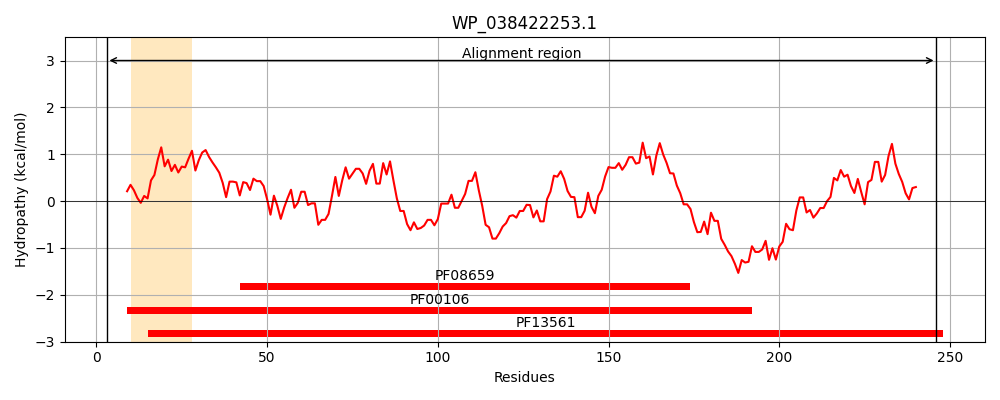
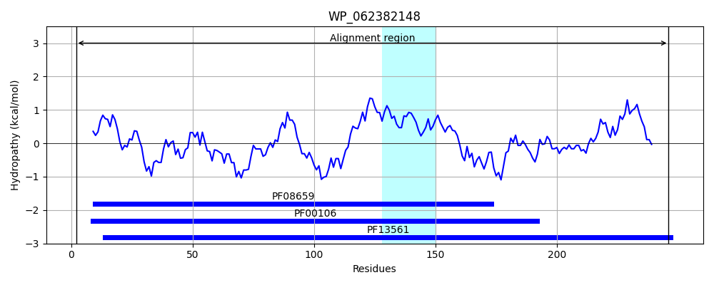

Hit Accession: WP_062382148
Hit TCID: 1.A.115.1.5
Hit Description: gnl|BL_ORD_ID|21287 gnl|TC-DB|WP_062382148.1|1.A.115.1.5 SDR family oxidoreductase [Pseudomonas abietaniphila]
Mach Len: 251
e:0.000000
Query TMS Count : 1
Hit TMS Count: 1
TMS-Overlap Score: 0.000000
Predicted Substrates:None
BLAST Alignment:
Score: 251 , Bit scores: 101 bits, E-value: 6.9e-26, Alignment length: 251, Percentage identity: 33
Query: 3 ALDFNGQTVWVTGAGKGIGYATALAFVEAGANV--TG-----FDLAFDGAGYPFATEMLDVADADQVRDVCARLLNNIERLDVLVNAAGILRMGATDQLSAEDWQQTFAVNVGGAFNLFQQTMAQFRRQRGGAIVTVASDAAHTPRIGMSAYGASKAALKSLALTVGLELAGSGVRCNLVSPGSTDTDMQRTLWVSDDAEQQRIRGFGEQFKLGIPLGKIARPQEIANTILFLASSHASHITLQDIVVDGG 246
A G+ VTG GIG ATA F E GA V TG D A G ++ D + +Q+ + ++ RLDVL AG M ++ +Q TF NV G Q+ + + G +++ S A + S Y ASKAA+++ A L+L VR N +SPG+T T L D A+QQ G + IP+G++ P+EIA LFLAS AS + ++ VDGG
Sbjct: 2 ARKLEGKIALVTGGTTGIGLATAKRFAEEGAYVYITGRRQAELDAAVARVGNATGVQV-DSTNLEQLDALYRQIGTEKGRLDVLFANAGGGSMLPLGDITEAQYQDTFDRNVKGVLFTVQKALPLLAK--GASVILTGSTAGSSGTAAFSVYAASKAAVRAFARNWILDLKDRNVRVNTLSPGATRTPGLVDLAGPDAAQQQ---GLLDYLASQIPMGRVGEPEEIAAAALFLASDDASFVNGIELFVDGG 246 | Protein Hydropathy Plots: |
|---|
|  |  |
Pairwise Alignment-Hydropathy Plot:
|
|---|
 |